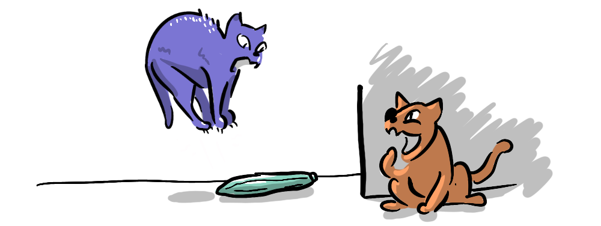

We've considered how the Prisoner's Dilemma reveals a number of key concepts in game theory. Yet, I have some reservations that it is the field's best advocate for applying game theory in the real world. I first expressed this concern on a Reddit thread—receiving helpful feedback which has informed this series of posts.
Game theory aims to enhance cooperation, and yet the first scenario we're presented with is a peculiar situation where the Nash equilibrium is mutual defection. This is due to the fact that it's a one-shot negotiation, in the dark, with no communication, trust or loyalty, no future consequences and no external factors, being decided by two "rational" (purely self-interested) criminals!

Is this an ideal starting point for fruitful negotiations?
Well, as Kaomet points out...
... there is more drama to it than just a win-win situation
So, it's provocative, but the potential lesson from such an introduction—rationality equals defensive selfishness, while cooperation is irrational and futile—seems at odds with healthy social norms and moral intuitions. Then again, it can be argued that the fact that the Prisoner's Dilemma conflicts with pro-social behaviour, makes it a good "dilemma".
As commented by Forgot_the_Jacobian
The one shot Prisoners Dilemma is often used in Econ teaching... since it is a paradigmatic example of how individuals acting in their own self interest can lead to a situation that is not socially optimal.
... and as MarioVX clarifies
If you claimed this is possible without an example, most people wouldn't believe you... it's an excellent hook to get people into game theory
So, it is a good example of how dilemmas arise. But there is a fine line between explaining and excusing behaviour. By framing a situation in such self-serving terms and calling it "rational", do we run the risk of justifying selfish behaviour? Well, not if you think about it in a nuanced way and see the paradoxical nature of the dilemma and the conflict with our moral intuitions!

To understand why the Prisoner's Dilemma is at odds with our moral intuitions, we'll explore some key points of difference between game theory and reality.
- Constraints: Reality doesn't unfold in a game-theoretical vacuum
- Iteration: There are no one-shot games in life
- Rationality: Pure self-interest is not "rational" in the real world
We'll then look at potential consequences for ourselves and society.
- Confidence: Our confidence in others influences our own behaviour
- Outsourcing Trust: When society does our cooperating for us, it's easy to forget how important trust is between individuals
As a field of mathematics, game theory requires confined variables to reach deductive outcomes. However, real life takes place amidst myriad social forces, from a disapproving glare to the entire justice system, which have evolved to curtail cheating. This is rooted in reciprocity—a key feature of life, because life is a series of interactions which extend beyond the present situation.
If we revisit the Prisoner's Dilemma but posit a close personal history between the prisoners, trust functions as a contract, shifting the likely outcome from a Nash equilibrium of mutual defection to a Pareto efficient mutual cooperation.
And even without such a soft value as trust, there's always revenge!
If you betray your partner, do you really believe that during their five years in the clink, surrounded by nefarious influences, and with only time on their hands, that they won't hatch a plan to make you pay?

The promise of future reward and the risk of future punishment are ever-present in reality. Game theorists represent this through iterated games. In the iterated version of the Prisoner's Dilemma, players not only have to account for the current round, but also for how their behaviour will affect the other player's behaviour in future rounds, and what the accumulative benefits will be of different strategies.
"I think at least the iterated prisoners dilemma is very commonplace, and the original dilemma is a stepping stone to the iterated version"—SmackieT
Jaiveer Singh, in his brilliant repeated games, explores the nuances of how strategies change given iterated prisoner's dilemmas, finding that with an infinitely or indefinitely iterated game (like choices in life) the dominant strategy becomes mutual cooperation.
This approach was explored in simulation right back in, what my daughter calls, the medieval days of the 1980s. Robert Axelrod played various agents, with different strategies, against each other in a tournament. He found that positive tit-for-tat was the dominant strategy—cooperate first and then mirror your opponent. Axelrod's "Evolution of Trust" has been entertainingly illustrated in this interactive by Nicky Case, while in Capitalising on Trust we explored how trust can be used to choose better cooperative partners.
Matt Ball even speculates that...
"... self-awareness ... evolved to keep track of repeated games. I'm pretty willing to bet that is why some of 'morality' [sic] evolved."
The iterated Prisoner's Dilemma can help us appreciate that cooperative trust-based actions can determine rational behaviour.
Game theory defines 'rationality' as pure self-interest within the constraints of the game. This tends to suggest that moral intuitions, that contradict the Prisoner's Dilemma, are necessarily irrational. But as we have seen, accounting for repetition changes the Nash equilibrium for the Prisoner's Dilemma to mutual cooperation. It turns out the conflict with real world social norms is not due to a failure of rationality, but rather a failure of the one-shot Prisoner's Dilemma to account for all the variables at play in real life.

We have seen that there are many reasons why the iterated Prisoner's Dilemma can help us develop ways to counteract distrust—when played out fully in relation to our moral intuitions. But moral intuitions vary. So, what if we don't have a strong repulsion to a situation that is mutually beneficial? What happens when lay-people, looking to justify selfishness, take the one-shot Prisoners Dilemma at face value?
The problem is that assuming selfishness and distrust is not a neutral position. In fact, one of the lessons we learn from game theory is that assuming distrust incentivises us to be less trustworthy, as we explored in What is Confidence?—in game theory & life—our propensity to cooperate is strongly influenced by our trust in the cooperation of others. Assuming bad faith can create self-fulfilling cycles of defection and cynicism.

Because of the clear benefits of cooperation across the board, society has developed many mechanisms that facilitate and protect cooperation, meaning we very rarely run into one-shot prisoner's dilemmas in the real world, as this comment from MarioVX explains:
Think about moneylending for instance. If there weren't laws obligating you to do so (by threatening punishment if you deviate), why would you ever pay a credit back? Conversely, knowing this reasoning, why would a bank ever agree to grant you a credit in the first place?
In Yuval Noah Harari's Sapiens he points to the credit system as one of society's key signifiers of progress, a hard-won result of civilisation locking in systematic trust.
Over the last 500 years the idea of progress convinced people to put more and more trust in the future. This trust created credit; credit brought real economic growth; and growth strengthened the trust in the future and opened the way for even more credit.
Society runs on trust, from trusting a barista to bring you a coffee after you've handed over your money to getting a mortgage for a home. Systems of democracy, government, the courts and the market, are intended to mitigate self-interest in a way that aligns with collective well-being.

This makes much of this trust invisible—behind the scenes. So, it can be easy to discount our capacity for trust and trustworthiness, and rely on the rules of the system or the invisible hand of the market to take care of everything for us, allowing our own capacity for trust and trustworthiness to atrophy.
Taking trust for granted makes us vulnerable to stories that tell us we are, at base, selfish, untrusting, "rational" agents. You can see that this might be corrosive to social cohesion. This is an idea Rutger Bregman explores in Humankind where he seeks to unweave some of our foundational stories about human nature and selfishness.

It could be argued that my agonising over the consequences for society might be overblown, as gmweinberg claims
I think pretty much no one is significantly influenced in their personal actions by game theory, it's just something people find interesting.
This might be absolutely right, but as thinkers like Harari and Bregman suggest, stories that emerge in philosophical circles end up in the mainstream over time.
"Stories are never just stories… stories can change who we are as a species… we can become our stories… So changing the world often starts with telling a different story"—Rutger Bregman
Due to its popularity we can end up shoe-horning every negotiation into a prisoner's dilemma.
"it is tempting, if the only tool you have is a hammer, to treat everything as if it were a nail."—Maslow's hammer (the law of the instrument)
But what if the situation has important differences? Perhaps it's asymmetrical like the Ultimatum Game, or the payoff for defection turns out to be the same as the payoff for cooperation, making cooperation more likely, or perhaps there is actually no incentive for one party to defect, meaning the other doesn't need to worry about defection like in the Toastmasters Payoff?
It might turn out we're creating a dilemma where there isn't one. In this way, game theory can be one of those "a little knowledge is a dangerous thing" applications.
We can avoid this trap by understanding other game theory scenarios. Which is where we're going next in the series. We'll be looking at:
- Stag Hunt
- Public Goods game
- Battle of the Sexes
- Ultimatum game
- Coordination game
- Hawk Dove game
And perhaps we'll find a better game theory poster-child. The series will then deconstruct payoff matrices themselves, enabling us to represent our own novel scenarios.
Robert Axelrod's tit-for-tat strategy helps us make sense of how cooperation can emerge in a competitive environment. But when you think about it, it still falls short of our moral intuitions—ideas of forgiveness and doing the right thing even when no one is looking. To try to understand these moral frameworks in game-theoretical terms we'll be taking on more complex games that better reflect the iterative and evolving nature of systems with...
- Evolutionary Game Theory
- Evolutionary Stable Strategy
These will help us to understand why we have some of the social norms we do.
I'd like to acknowledge and thank those who provided feedback on the blog and Reddit for helping shape my views on the Prisoner's Dilemma. I've come to appreciate the value of the numerous game theory concepts it illuminates and the value of having a provocative hook which immediately engages us with a puzzle.
This process has clarified, for me, the importance of the iterated Prisoner's Dilemma, not as a supplement or extension of the Prisoner's Dilemma, but as the actual point of (and solution to) the dilemma. To leave a student or lay-person aware of only the one-shot version, risks reinforcing a story that human nature is inherently selfish, untrusting and untrustworthy, when the opposite is true—cooperative relationships and the development of sophisticated networks of trust are defining features of human civilisation.
The issue I have had with the Prisoner's Dilemma primarily has to do with the constraints of game-theoretical scenarios in general. By going through this process of analysis, I hope to inoculate myself and others against some of the potentially misleading limitations of game theory when applied to real-world situations. It's an important reminder that we can utilise game theory without jettisoning the social norms and moral intuitions that have evolved in (and for) our more complex and complicated real world. Those values can point us to more nuanced and interesting explanations, making us better game theorists.